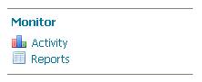

Installing the Monitor Extension¶
Note
If performing an upgrade of the monitor extension please see Upgrading.
The monitor extension is not part of the GeoServer core and must be installed as a plug-in. To install:
Navigate to the GeoServer download page.
Find the page that matches the version of the running GeoServer.
Download the monitor extension. The download link will be in the Extensions section under Other.
Extract the files in this archive to the
WEB-INF/libdirectory of your GeoServer installation.Restart GeoServer
Verifying the Installation¶
There are two ways to verify that the monitoring extension has been properly installed.
Start GeoServer and open the Web administration interface. Log in using the administration account. If successfully installed, there will be a Monitor section on the left column of the home page.
Monitoring section in the web admin interface¶
Start GeoServer and navigate to the current GeoServer data directory. If successfully installed, a new directory named
monitoringwill be created in the data directory.